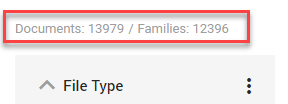
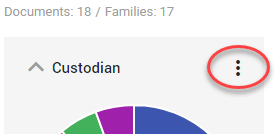
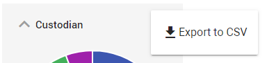
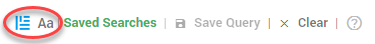
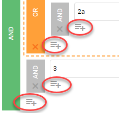
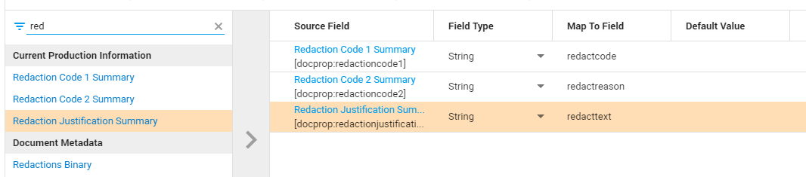
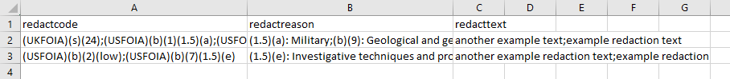
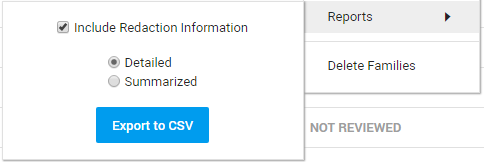

Detect all content that is part of a document (including, for example, comments and speakers notes) with Document Insights.
Sometimes, this content is not visible (hidden content) in Legal Review.
View Documents/Families count in Facet Overview (Browse).

Manage Facets has been updated with Expand All/Collapse All and a filter.
Download Values and Counts from Facets with Export to CSV.


Redact an entire page with Redact Page (P)
- Search quickly on years/months within Fields.

Upload has been improved.
- Auto-Redaction improvements.
- Merge adjacent hits of an auto-redaction rule.
- Only redact the first part of an e-mailaddress.
- Only redact the last n characters of a search hit.
- Only redact the first n characters of a search hit.
- Redact the complete hit except the last n characters.
Updated production cards in Production Overview.
Added End Date for Completed, Failed and Canceled productions.
Added total number of produced pages for Completed productions.
Added production size on disk for Completed productions.
New Reports added: Collected Locations Summary Expanded (Processing), Email From Details, Reviewer Daily Summary, Privileged Log, Senders Domain Details, Annotations Report, Email To Details, Reviewer Summary, Duplicates Report, Recipient Domain Details (Review), Matter Overview (Other).
Toggle between Text Query Mode and Build Query Mode (see Keyword Search).
Text Query Mode is for simple searches, Build Query Mode is for complex searches.
In the Build Query Mode, you can now add sub queries on all levels (see Keyword Search).

The permission 'Bulk field update' has been added.
This permission allows users to use the Batch Update function in Batch Search. If the user does not have a role with this permission, the update functionality and columns (Updated Documents, Value) are hidden.
For more information on roles and permissions, see Role Permissions Explained.
Edit default security roles (created by Legal Review templates) in Role Management.
Productions in Document View
View if and how the currently open document (image) has been produced.
Toggle between Image View and Produced View.
Also, view all documents of a production via Facet View (Browse). Make sure to select the facet Productions Overview via Manage Facets.
Note: You can only view productions if you have a role with the proper permission (Access produced document content) assigned to you.
Keep an eye on the Document List, while simultaneously reviewing a document in Document View in a second window (on another monitor) or in a new tab.
Updated Redactions & Annotations
Select All to edit/delete all redactions and/or annotations.
Note: A selection of both redactions and annotations cannot be edited all at once.

When producing documents, you can now add the used Redaction codes (code set)/reasons (code entry) and/or redaction text to the load file.
Make sure to map the redaction fields correctly (see step 5 of creating a production: Load File), for example, like this:

After the load file has been produced, you can view the added redactions for each produced document (grouped per code/reason and/or text).

Updated Search
Improved ability to add sub queries (nested queries). This makes it easier to create complex search queries.
Full-text search box contains 'Enter Keywords' text.
Full-text search box has multiple lines for better view of large queries.
Fields and Tags dialogues are wider to better view long Field and Tag names and Field Values.
Quick Redact (shortcut Q) is now available.
Export of redaction codes/text is available as a summary (grouped per document) and detailed (full/exported per redaction) list.
For more information on how to create a report via the Document List, please refer to Reports.

- Macro searches are now supported in Keyword Highlighting
Updated Search
Choose from a selection of predefined search operators. Also, the AND/OR selection for combined full-text and Fields/Tags/Review Status searches has been updated.
Update for creating Redactions in Document View.
You can now also define the appearance settings.
The Full Family Tree shows all family relations of the matched documents.
The Partial Family Tree shows only the parents (and the parents of the parents of the parents etc.) of the matched documents.Download and/or Edit Load Files
Part of Productions.
New Reports lay-out
This is still a beta feature.
Fields search has been moved.
See Keyword Search.